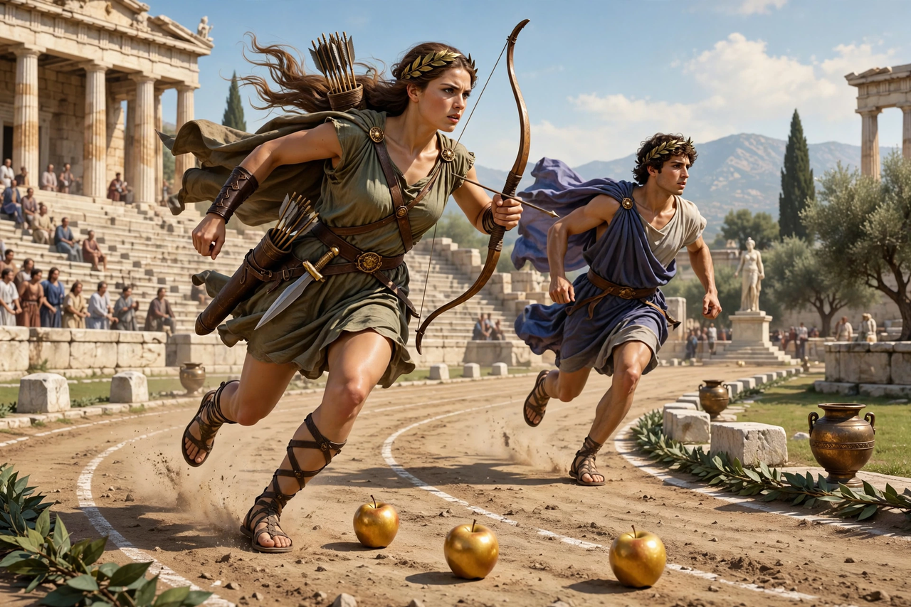

| Parents | Iasus (Arcadian version) or Schoeneus (Boeotian version) |
|---|---|
| Consort | Hippomenes (Melanion) |
| Known for | Calydonian boar hunt; the foot race with golden apples |
| Patron | Artemis |

Atalanta (Greek: Ἀταλάντη, "equal in weight") is a heroine of Greek mythology: a virgin huntress devoted to Artemis, raised by a bear in the wilderness, and renowned as the fastest runner among mortals. She took part in the Calydonian boar hunt and, in another cycle of tales, was defeated in marriage only through the trick of the golden apples.
Exposed at birth by a father who wanted a son, Atalanta was suckled by a she-bear sent by Artemis and reared by hunters. At the Calydonian boar hunt — where Artemis had sent a monstrous boar to ravage Calydon — she drew first blood, and Meleager awarded her the hide, provoking the quarrel that led to his death. Two centaurs who tried to assault her were shot down. In the Boeotian version, Atalanta vowed to marry only the man who could beat her in a foot race, losers to be put to death. Hippomenes (also called Melanion) won by dropping three golden apples given him by Aphrodite; Atalanta stooped to pick them up and lost. In later myth the couple, for profaning a temple, were transformed into lions.
Atalanta became a byword for female athleticism; Handel composed the opera Atalanta (1736), and the Italian football club Atalanta BC of Bergamo bears her name and image. Some ancient sources also list her among the Argonauts, though Apollonius of Rhodes has Jason refuse her on the grounds that a woman aboard would cause strife.